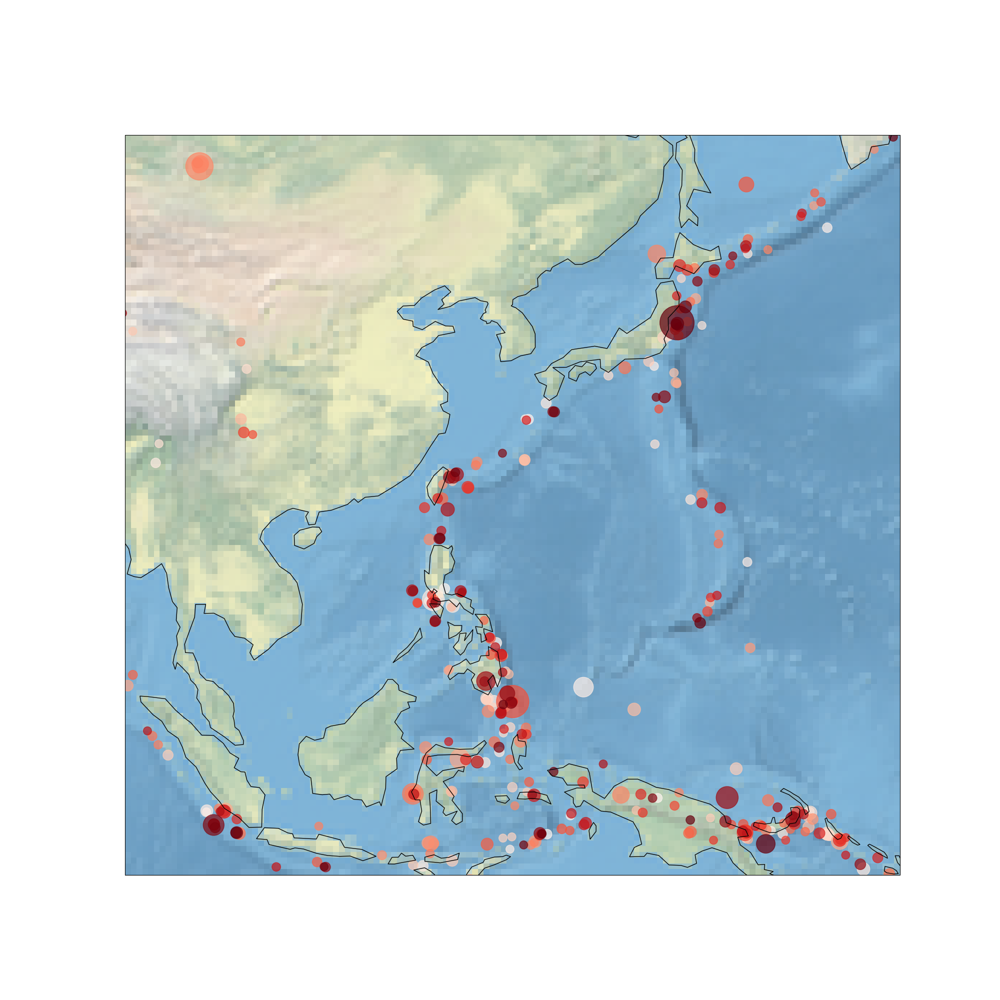

USGS Deprem Verileri
quakefeeds
En rahat yöntem quakefeeds adlı paketi kullanmak,
import pandas as pd, datetime
from quakefeeds import QuakeFeed
feed = QuakeFeed("4.5", "month")
res = []
for i in range(len(feed)):
d = datetime.datetime.fromtimestamp(feed[i]['properties']['time']/1000.0)
s = feed[i]['properties']['mag']
res.append([d,s])
df = pd.DataFrame(res).sort_values(by=0)
df = df.set_index(0)
df.columns = ['Magnitude']
print (df.tail(5))
Magnitude
0
2021-02-13 07:30:56.150 5.2
2021-02-13 08:09:12.552 4.9
2021-02-13 08:15:21.905 4.9
2021-02-13 08:18:33.479 5.3
2021-02-13 08:19:51.545 4.5
Zamna göre sıralanmış, son bir ay içindeki 4.5 ölçeğinden büyükteki depremleri aldık.
USGS, Json
Aslında USGS'in Web üzerinden JSON döndüren bir hizmeti de var. Daha fazla esneklik isteyenler bu seçeneği kullanabilir.
import requests, time, datetime
today = datetime.datetime.now()
days = 40 # bugunden kac gun geriye
start = today - datetime.timedelta(days=days)
usgs_request_url = 'https://earthquake.usgs.gov/fdsnws'
usgs_request_url+='/event/1/query.geojson?starttime=%s&endtime=%s'
usgs_request_url+='&minmagnitude=4.5&orderby=time&limit=1000'
usgs_request_url = usgs_request_url % (start.isoformat(), today.isoformat())
qres = requests.get(usgs_request_url).json()
res = []
for i in range(len(qres['features'])):
d = datetime.datetime.fromtimestamp(qres['features'][i]['properties']['time']/1000.0)
s = qres['features'][i]['properties']['mag']
res.append([d,s])
import pandas as pd
df = pd.DataFrame(res).sort_values(by=0)
df = df.set_index(0)
df.columns = ['Magnitude']
print (df.tail(5))
Magnitude
0
2021-02-13 07:30:56.150 5.2
2021-02-13 08:09:12.552 4.9
2021-02-13 08:15:21.905 4.9
2021-02-13 08:18:33.479 5.3
2021-02-13 08:19:51.545 4.5
Her iki yöntemde de qres['features'][i]['properties'] ya da
feed[i]['properties'] içinde mesela pek çok diğer sözlük öğesinin
orada olduğu görülecektir. Okunabilir bir yer tarifi, enlem boylam
kordinatı, vs. gibi ek detaylar var, bunlar alınıp farklı şekillerde
kullanılabilir.
İlginç bir deprem haritalama denemesi şöyle olabilir; son 90 gündeki depremleri alıp haritada gösterelim; renkleme en eski daha açık, en yakın daha koyu olacak şekilde, ve şiddeti çember büyüklüğü üzerinden gösterelsin. Böylece renklerin nereye doğru koyulaştığına bakarak bir zamansal ilinti yakalamayı umuyoruz, aynı şekilde şiddete bakarak burada da yersel zamansal bir kalıp görebilmeyi umuyoruz.
Önce veriyi al, kaydet,
import requests, time, datetime
today = datetime.datetime.now()
days = 90
start = today - datetime.timedelta(days=days)
usgs_request_url = 'https://earthquake.usgs.gov/fdsnws'
usgs_request_url+='/event/1/query.geojson?starttime=%s&endtime=%s'
usgs_request_url+='&minmagnitude=4.5&orderby=time&limit=1000'
usgs_request_url = usgs_request_url % (start.isoformat(), today.isoformat())
qres = requests.get(usgs_request_url).json()
res = []
for i in range(len(qres['features'])):
lat = qres['features'][i]['geometry']['coordinates'][1]
lon = qres['features'][i]['geometry']['coordinates'][0]
rad = qres['features'][i]['geometry']['coordinates'][2]
d = datetime.datetime.fromtimestamp(qres['features'][i]['properties']['time']/1000.0)
s = np.float(qres['features'][i]['properties']['mag'])
diff = (d-start).days
res.append([d,s,lat,lon,rad,diff])
import pandas as pd
df = pd.DataFrame(res).sort_values(by=0)
df = df.set_index(0)
df.columns = ['mag','lat','lon','rad','ago']
df.to_csv('japanq.csv')
Grafikle,
import pandas as pd
df = pd.read_csv('japanq.csv',index_col=0,parse_dates=True)
import cartopy.crs as ccrs
import cartopy
fig = plt.figure(figsize=(20, 20))
ax = fig.add_subplot(1, 1, 1, projection=ccrs.PlateCarree())
ax.set_global()
ax.stock_img()
ax.coastlines()
ago = np.max(df.ago)-df.ago
s = np.power(3,df.mag)
ax.scatter(df.lon, df.lat, c=df.ago, cmap=plt.cm.Reds, s=s, alpha=0.7, transform=ccrs.PlateCarree())
ax.set_extent([94, 161, -10, 54], crs=ccrs.PlateCarree())
plt.savefig('japanq.png')

pyearthquake
Bu Python paketi ile USGS sitesine bağlanarak istenen zaman aralığındaki deprem verilerini almak, onları bir harita üzerinde basmak mümkün oluyor. Daha önce blog'da paylaştığımız deprem Python kodu statik, tek bir veri dosyası içinde, pyearthquake ile en son verileri, istenen detayda almak mümkün.
Şuradaki yazıda güzel bilgiler var. Kurmak için PyPi paketini
indirin, basemap ayrı kurulmalı. Sonra aynı komutu pyearthquake için
yapabilirsiniz.
from pyearthquake import *
catalog = usgs.retrieve_catalog("M1+PAST_7DAY")
print len(catalog)
mag6_list = [event for event in catalog if float(event["Magnitude"]) >= 6.0]
print len(mag6_list)
for row in mag6_list:
print row["Eqid"], row["Magnitude"], row["Depth"],
row["Datetime"], row["Depth"], row["Region"]
usgs.plot_events(catalog)
Bu kod en son 7 günlük, sonra Richter ölçeğinde 6.0'dan büyük deprem verileri alacaktır, ve sonuncu verileri bir haritada basacaktır. İstediğiniz noktalara zoom yapmak için zoom ikonuna tıklayıp istenen bölgeyi haritada bir dikdörtgen içine aldığınız zaman o bölgenin detayları görülecektir. Üstte paylaştığımız yazıda bunun Japonya için yapıldığını görüyoruz.
Yukarı